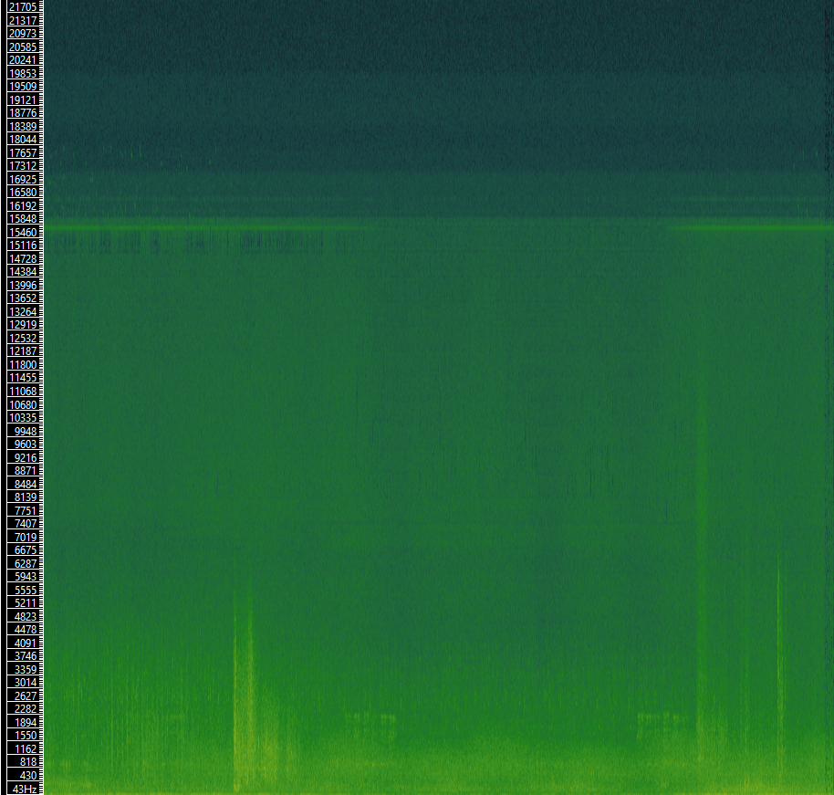
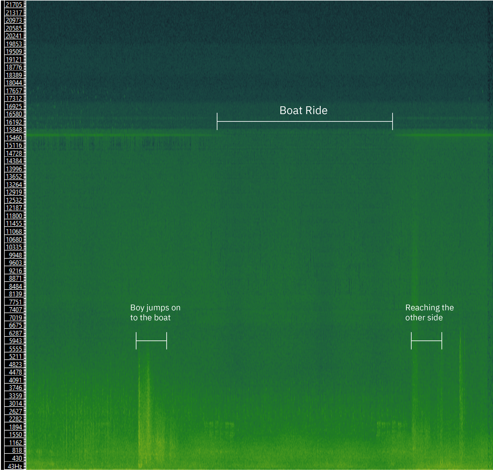

In this media paper, my purpose is to inform you of the visual aspects in game. I will describe the ways in which they affect both the player, and our main character, the boy in the game.
- I assume you are a college-educated person with at least elementary knowledge of videogames in general and LIMBO in particular
- I assume you are familiar with how elementary audio, video, and design features work in videogames
- I assume you have experience with some kind of interactive media
- I assume you have some knowledge of cultural studies and will define specialized terms and briefly introduce authors mentioned in this work, i will do my best to be simple, clear, and honest
Scene design: Boy at the waters edge
This scene in particular is one where the player is first met with a change in atmosphere. The boy walks out from a dense forest out to a cove at the edge of a body of water. At the edge of the body of water is a boat. The choices that Playdead made in designing this scene are deliberately made to create a sense of vastness to this world they are creating. The following elements are the most important parts that make up the whole.

Color Palette

While the color palette is limited to a completely monotone palette, the use of value in this scene (and others like it) is a crucial element in creating the atmosphere. The transition from the mid-dark values to a giant space of the second lightest color in the whole palette, isn't easy on the eyes. It is our first major introduction to a major light source. We can assume it is the sun peeking in to an opening in this cavern like structure from looking at the subtle darkening of the values as it comes closer to us in the playing field. Without these background elements, the scene would feel flat and unengaging. But because the designers at Playdead chose to use the values in this way, the scene had an enormous amount of depth in it's environment.
The Raft

The design and look of the boat affects the feel of the environment as well. It is a small meek-looking structure with a sail-less mast in the center. It is slightly rocking back and forth in the still water. I think that Playdead's choice to leave the sail off of the boat was a choice in designing the atmosphere of this scene. Visually, if it were to appear as a typical sailboat, I feel it would take up the spotlight as the star of the show. Without the sail, it creates the illusion of an open environment. When you jump onto the raft, you land on it with a small thud and it sails out into seemingly boundless waters.
The Boy's Reaction

The boy's reaction to the change in his environment are subtle but still important in immersing the player in the game's environment. As he settles in the boat for a second as it moves to the right, if you stand still, he lifts his head and stares out into the sky. His curious demeanor adds to the sense of adventure in the game. The half second that he pauses before reacting to his environment is directly related to what Massumi discusses in "The Autonomy of Affect". "Massumi, Brian." The Autonomy of Affect. ".Cultural Critique, no. 31, University of Minnesota Press, 1995, pp. 83–109, https://doi.org/10.2307/1354446." The information around him, the new environment, and the present quietness of the still waters are all being absorbed by the boy in this half second. All this is being processed half a second before he is able to react. But his simple gesture signals to us that he has in fact, processed this environmental information and it has produced a sense of wonder and awe.
Sound during the scene
 If we take a look at the visual representation of the sound during the scene above, we can see the times in which the boy: jumps onto the boat, is out on open water, and when he lands on the other side of the body of water. Objectively, this image mimics the scene visually. The ledge and openness of the water is present in both the scene and in the visual representation of the audio. The lack of sound on the water create a dip in high frequencies, illustrating a dip on the visual plane.